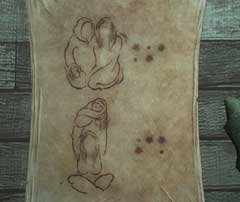

| 概要 | 地図 |
| 淡いヒント集 | ヒント集 | 的確なヒント集 |
| 攻略最短ルート |
| 場所選択に戻る |
シベリア
船内の張り紙
 ・この絵は何を意味するのか? ・また、となりの「・」や「*」のような記号にはどんな意味があるか? ・この張り紙はもう一枚ある。全てに意味があるのか?
見張り台の人
・あなたとハンスがシベリアに来るのを見ていた人物である ・いったい何者だろうか? ・あなたに対して何を伝えてくれるだろうか?
扉
・どうやったら開くことができるか? ・似たような構造のものを依然見たことは無いか? ・ヒントを伝えてくれるものは、景色だけでなく所有物であったりもするだろう。
変な装置

・この装置は何をするものか? ・砂が落ちるのだが、何の意味があるのか? ・砂が落ちる場所には何があるか?
| 次へ >> |
|
| 場所選択に戻る |
| 概要 | 地図 |
| 淡いヒント集 | ヒント集 | 的確なヒント集 |
| 攻略最短ルート |
Syberia II
| 目次へ戻る | ページの上部へ |